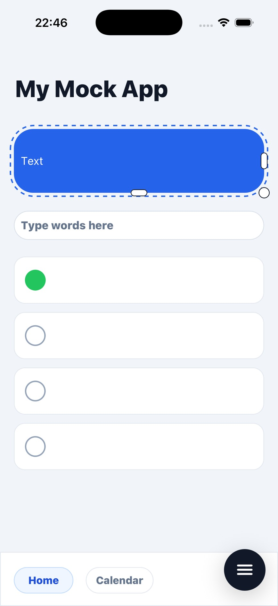
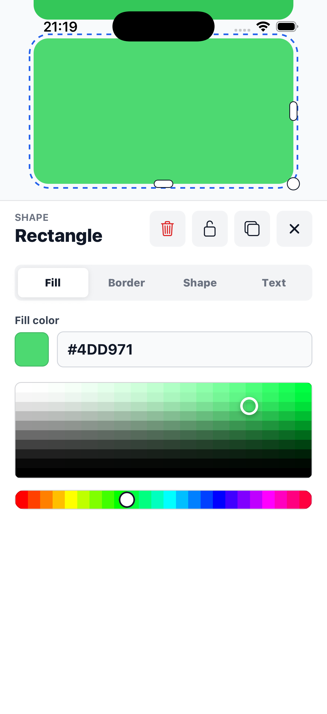
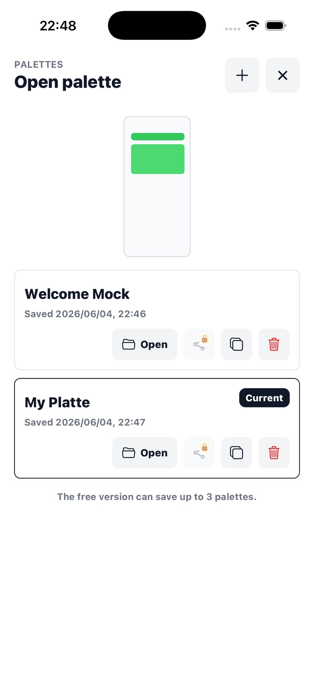

Preview on a real screen
Use the full iPhone canvas to check how colors, rectangles, and layout balance actually feel at device size.
iOS App
A color and layout preview app for checking UI colors, rectangles, sizes, and corner radius on a real iPhone screen.



Screen Palette is a small visual checking tool for iOS developers who want to test colors, shapes, spacing, and corner radius directly on a real iPhone screen.
It is not intended to replace full design tools. Instead, it helps you make quick, practical UI checks from the device in your hand.
Use the full iPhone canvas to check how colors, rectangles, and layout balance actually feel at device size.
Adjust rectangle position, size, fill, border, text, and corner radius while seeing the result immediately.
Keep useful mock layouts on the device so you can reopen, duplicate, and compare visual ideas later.